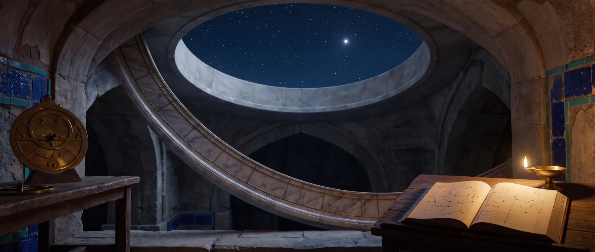

圆形象棋
沙特兰兹·鲁米亚，“拜占庭象棋”：四个环上的64格，不升变的兵，以及阿里·沙特兰吉家中的又一种棋。

阿拉伯手稿称这种棋为鲁米亚——拜占庭的，马苏迪称之为穆达瓦拉——圆形的。棋盘是一个由四个同心环、每环16格组成的64格圆盘。棋子是普通沙特兰兹的棋子；每方的沙赫和费尔兹位于最内环，外侧依次是菲尔、马、鲁赫，各四枚兵在两侧掩护棋子。
手稿讲道，这种棋是“西瓦尔·哈拉尼送给塔希尔·伊本·侯赛因的”——那位为哈里发马蒙赢得王位、于822年去世的统帅。接着原文比较两种棋：“印度的兵可以升变为费尔兹，因为它有尽头；拜占庭的兵不能，因为它没有尽头”——圆盘上没有底线。这里鲁赫更强，马更弱，如果同色的两枚兵绕圈相遇互相顶住，对手可以直接把它们拿下棋盘。
中央的城堡
十四世纪，阿穆利把棋子反过来摆，沙赫在外，并把四个象限的边界延伸到中心，得到四个额外的格——胡孙，堡垒。到达这种格的沙赫不会输。与他的城堡象棋是同一个想法。
复兴
伊本·阿拉伯沙在撒马尔罕阿里·沙特兰吉家中见过圆形象棋。在欧洲，理查德·特威斯（1789）提及之后，人们于十九世纪上半叶在伦敦、加尔各答和德国尝试复兴这种棋；今天英格兰仍有人在同样的棋盘上下“圆形象棋”。在我们的游戏花园里，圆形棋盘目前只存在于这篇文章中。